Install please:
So, we need to send packets through the wire.
We use protocols for that.
We must define protocol mechanisms and message format.
Each protocol will provide different functions.
Reference model for communication system components.
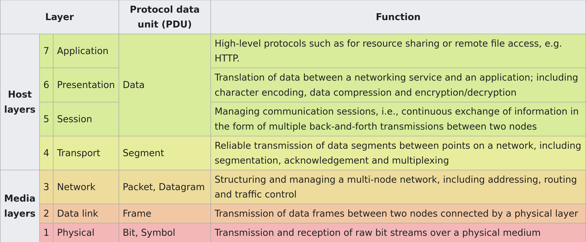
Is not actually implemented, that is, it’s a conceptual separation of networking responsibilities for protocols.
Mostly used for talking about networks between informaticians.
Set of protocols used in the Internet (and LANs and so)
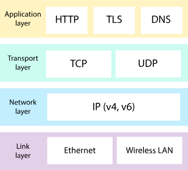
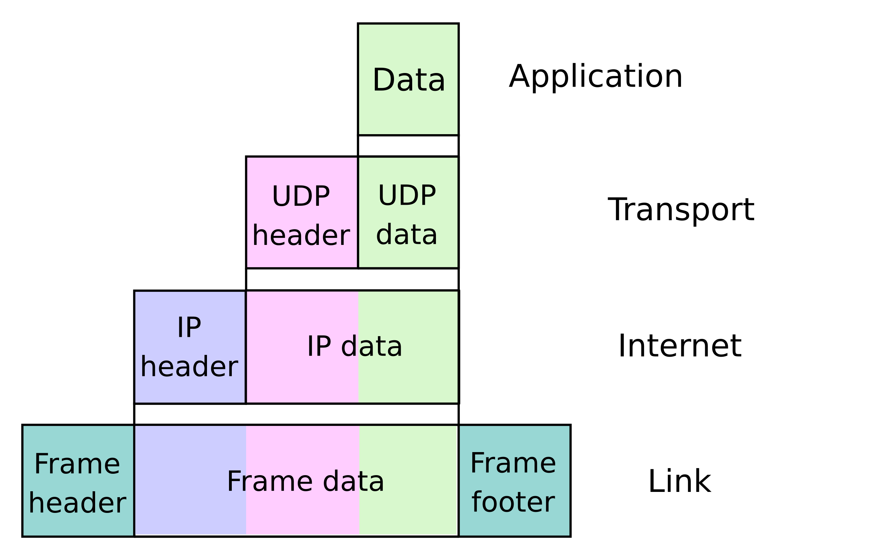
The message of each protocol is encapsulated, that is used as the payload of a lower protocol level.
The header and footer of the encapsulating protocol are concatenated to the bytes of the higher protocol.
Define rules for two systems to transmit information between them.
Consists of syntax and semantics (like programming language).
The syntax defines the composition of the bytes that will be sent.
The semantics define what the bytes represent.
48-bit identifier assigned to network interface controllers (NIC)—devices in computers that connect to a network—to use as an address in network communications.
They differentiate devices from one another in the same network.
Three common representations:
Six groups of two hexadecimal digits, separated by hyphens (-) in transmission order
01-23-45-67-89-AB
Six groups of two hexadecimal digits separated by colons (:)
01:23:45:67:89:AB
Three groups of four hexadecimal digits separated by dots (.)
0123.4567.89AB
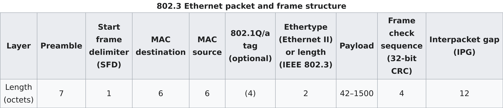
Preamble and SFD are used for synchronization.
MAC destination indicates the MAC of the destination device.
MAC source indicates the MAC of the source device.
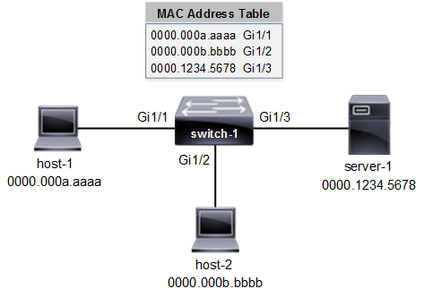
Computers create the Ethernet frame, send it through their NIC, and off they go.
It’s responsability of the network infrastructure to make the frame reach its destination.
Usually, the frame are forwarded to switches until the target is reached.
IPv4 uses 32-bit addresses; 4_294_967_296 possible addresses, though some are
reserved for other purposes.
Most often written as four octets of the address expressed individually in decimal numbers separated by periods.
Consists of a header concatenated with the payload.
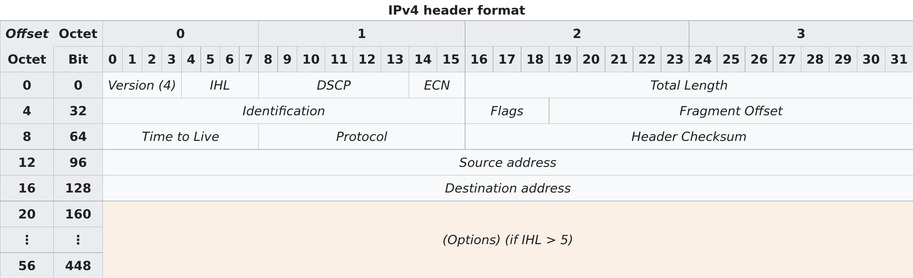
Source address: the IPv4 address of the sending device
Destination address: the IPv4 address of the destination device
Protocol: identifies the protocol of the contained payload
Time to Live (TTL): used to limit a datagram’s lifetime
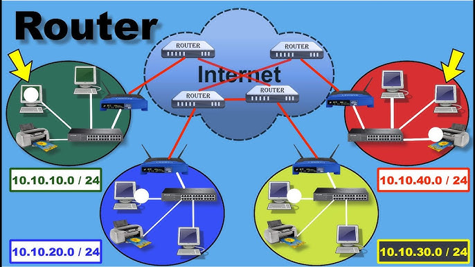
Each packet goes through routers that forward the packet to a router that should be closer to the intended destination device (Destination address).
Each time a router receives a packet, it decrements the TTL by one, if it reaches zero it discards it instead of forwarding it.
Ethernet handles the local routing, between immediately physically connected devices.
IPv4 (and IPv6) handles routing through multiple networks.
Very simple protocol, encapsulates application layer messages with a small header.
Within an operating system, a port identifies a specific application or service on a device.
As such, many ports may be in use by multiple applications or even one alone.
A port is identified by a 16-bit integer, usually written a 16-bit integer.
e.g., 22, 80
Several port numbers are associated with specific network services.
Applications interacting with those services default to using the known port number.
Nonetheless, they are a suggestion only, any network service can run through any of the valid 65536 port numbers.
| Port | TCP | UDP | Description |
|---|---|---|---|
| 21 | Yes | FTP control | |
| 22 | Yes | SSH | |
| 53 | Yes | Yes | DNS |
| 80 | Yes | Yes | HTTP |
| 443 | Yes | Yes | HTTP over TLS |
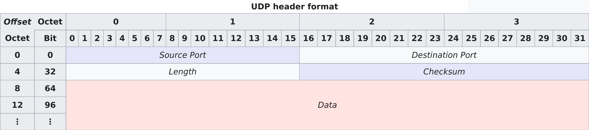
Source port: identifies the sender’s port
Destination port: identifies the receiver’s port
Length: length in bytes of the UDP datagram (header + payload)
As with UDP, it encapsulates application layer messages.
But it provides many more features and as such is quite more complicated.
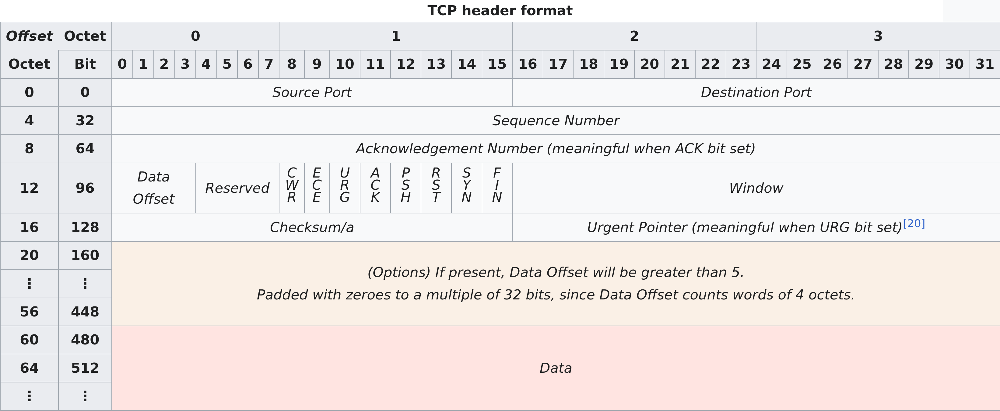
Source port: identifies sending port
Destination port: identifies receiving port
Sequence number: used to identify the order of the data
Acknowledgment number: used to indicate receipt of data
ACK: Indicates acknowledgment
SYN: Indicates initial sequence number
FIN: Indicates it’s the last packet from the sender
Establishes the sequence numbers to use in the transmission.
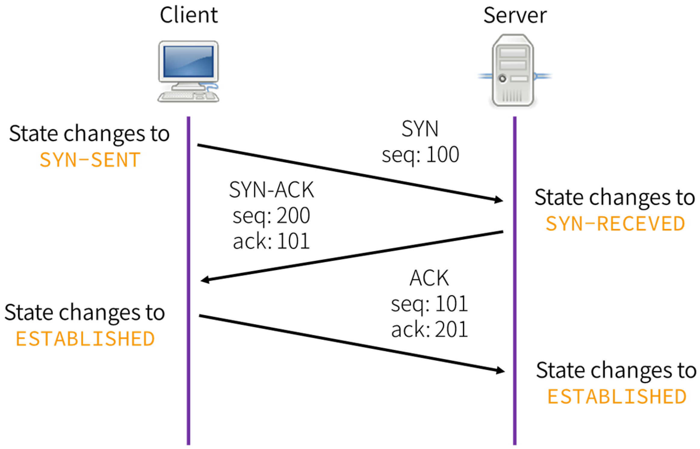
This is why TCP is called connection-oriented. All data transmission in this TCP connection will continue from the sequence numbers decided in this step.
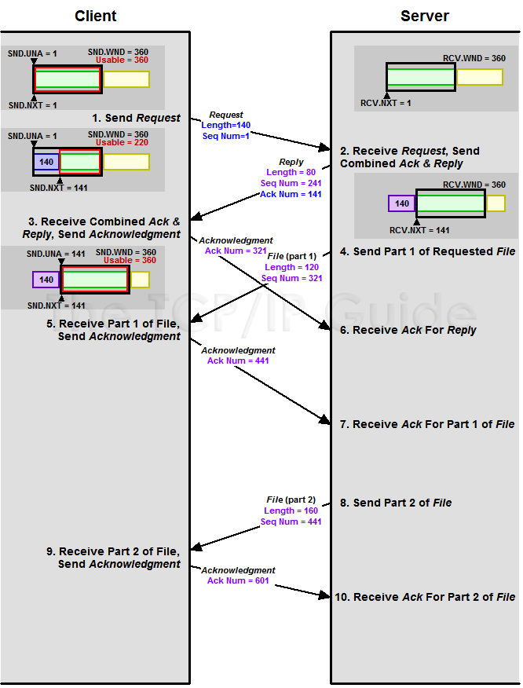
Each packet sent is answered back with a packet ACKnowledging that the data was received.
ACK number = sequence number of received segment + length of received data (SYN and FIN each consume one sequence number)
TCP handles a connection of bytes transferred between sender and receiver. UDP sends messages.
TCP has error-correction, flow control, delivery guarantees, etc. UDP has no such things.
As such, an application talking through UDP must implement such features if needed necessary (e.g., QUIC over UDP).
Further explained in next session.
Consists of a request answered by a response from the server.
METHOD /path HTTP/version Header-Name: value Header-Name: value [optional body]
GET / HTTP/1.1 Accept: */* Accept-Encoding: gzip, deflate Connection: keep-alive Host: github.com User-Agent: HTTPie/3.2.4
HTTP/version status_code status_text Header-Name: value Header-Name: value [optional body]
HTTP/1.1 301 Moved Permanently Content-Length: 0 Location: https://github.com/
Interactively dump and analyze network traffic
wireshark PCAP
CTRL-f
Write string or bytes.
Write something on Apply a display filter.
You can select a field from the dissection window to filter on that value.
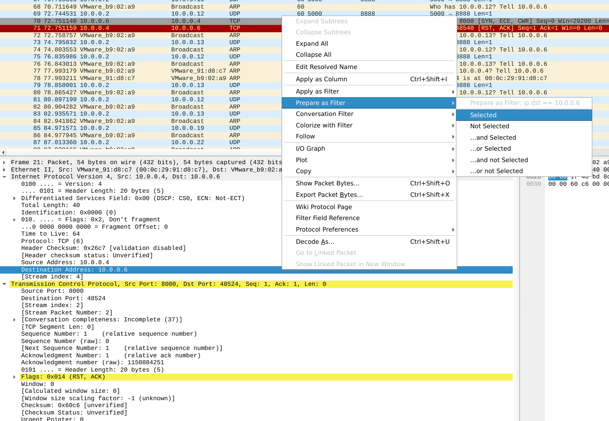
Right-click on packet, Follow -> TCP/UDP.
At Wireshark toolbar, Statistics
Particularly Endpoints and Protocol Hierarchy
At Wireshark toolbar, File -> Export Objects, select protocol to export from.
Reorder input file by timestamp into output file
reordercap INFILE OUTFILE